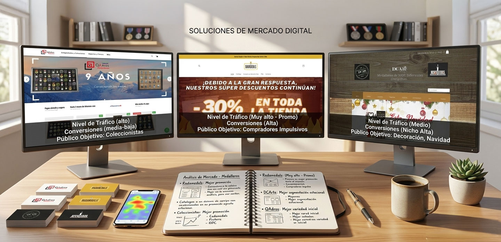
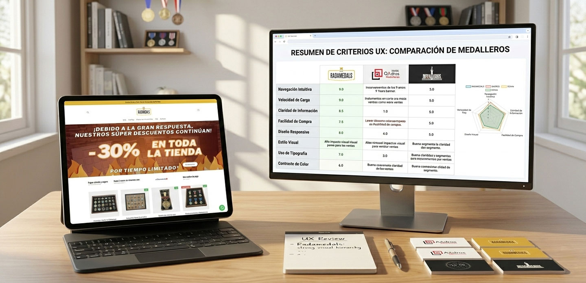
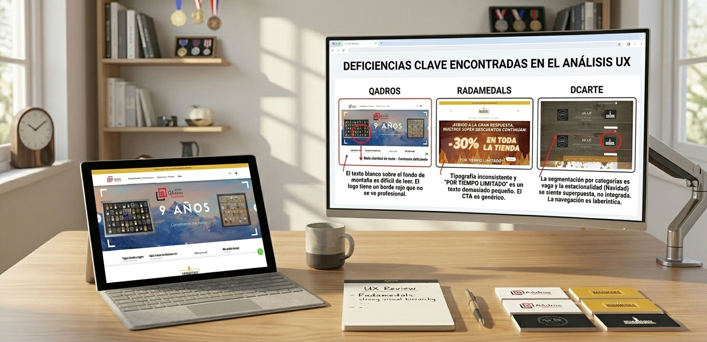
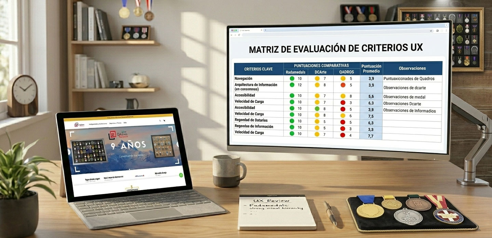
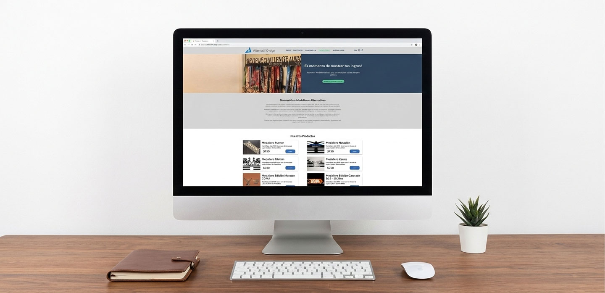

UI/UX Website Analysis — Evaluación Estratégica de Experiencia Web
Benchmark estratégico de experiencia web enfocado en e-commerce y optimización de usabilidad.
Análisis comparativo de sitios web competidores para identificar mejores prácticas, oportunidades de mejora y criterios de diferenciación antes de diseñar la futura presencia web de Alternatif D-sign / Medal Holders.
Este proyecto se centró en descomponer la experiencia actual de la competencia, evaluar su usabilidad, flujo de compra, manejo de catálogo y percepción visual para establecer una base sólida de UX estratégico en el diseño de un sitio de comercio electrónico.
UX / UI Analyst
Benchmarking · UX Strategy
2024

Contexto
Antes de diseñar una nueva experiencia digital, es fundamental entender cómo se comporta el mercado.
Este análisis evaluó tres competidores del sector de productos personalizados, enfocándose en diseño visual, flujo de compra, experiencia móvil y percepción de confianza.
El objetivo fue identificar oportunidades estratégicas que permitieran desarrollar una experiencia superior en la siguiente fase de diseño.

El Problema
Antes de diseñar o rediseñar una web, es esencial comprender cómo lo está haciendo la competencia
Los retos principales a responder fueron:
- ✔ Identificar qué prácticas están funcionando en el sector
- ✔ Detectar fricciones en procesos de navegación y compra
- ✔ Analizar claridad estructural y jerarquía visual
- ✔ Evaluar experiencia responsive y móvil
Sin este análisis, cualquier propuesta de diseño correría el riesgo de repetir errores existentes o perder oportunidades de diferenciación.

Metodología
Benchmarking Competitivo
Se evaluaron tres sitios representativos del mercado bajo criterios clave de experiencia de usuario:
- Diseño visual y jerarquía
- Claridad informativa
- Flujo de compra
- Personalización de producto
- Experiencia móvil
Evaluación de Usabilidad
Se identificaron patrones repetidos, fortalezas estructurales y puntos de fricción en navegación, categorías, checkout y arquitectura de información.

Insights Clave
- ✔ La jerarquía visual impacta directamente la percepción de confianza
- ✔ Procesos simples mejoran la conversión
- ✔ La experiencia móvil es determinante en e-commerce
- ✔ La personalización debe integrarse sin fricción
Estos hallazgos permitieron establecer un estándar de calidad superior para el desarrollo futuro del proyecto.

Recomendaciones
A partir del benchmarking, se estructuró una serie de recomendaciones para la próxima etapa de diseño:
- ✔ Simplificar el proceso de compra para reducir fricción
- ✔ Mejora de la jerarquía visual para destacar acciones principales
- ✔ Optimización de experiencia móvil
- ✔ Claridad en el flujo de personalización del producto
- ✔ Uso de patrones UX consistentes y fácilmente reconocibles
Conclusión
Este proyecto demuestra cómo un análisis UX estratégico puede guiar decisiones de diseño antes de iniciar cualquier prototipo o desarrollo.
El benchmarking permitió transformar observaciones en criterios concretos de mejora y diferenciación competitiva.
El proyecto demuestra cómo un enfoque metodológico y analítico en UX puede transformar decisiones de diseño y establecer ventajas competitivas antes de iniciar cualquier prototipado o desarrollo.